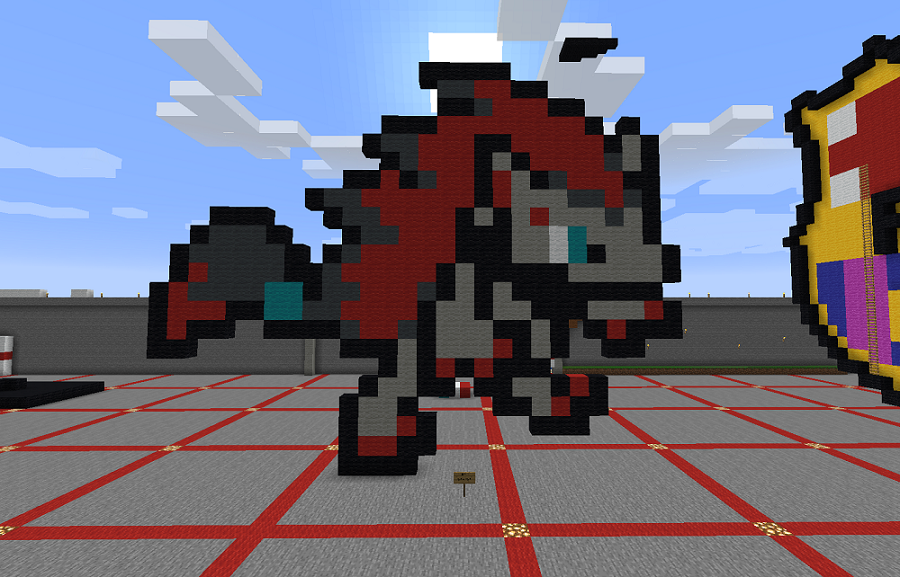

Mojang's Minecraft is a virtual environment in which one can create almost anything using blocks. A popular use for Minecraft is making pixel art to create both small and large-scale drawings of various things.
I went for a much simpler design that shows a Pokémon named "Zoroark", which has been my favorite Pokémon ever since it was introduced into the series in Generation V. My entire childhood I have grown up with this video game line and loved it the whole way, even up to today. I feel as if the world of Pokémon has created a large impact on many people's lives around the world, both children and adults alike, and especially mine. 